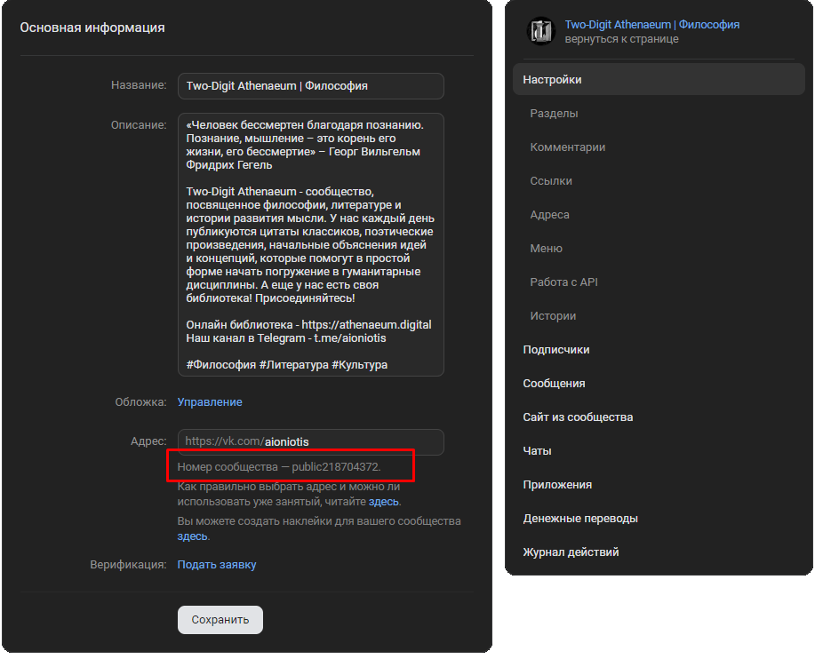
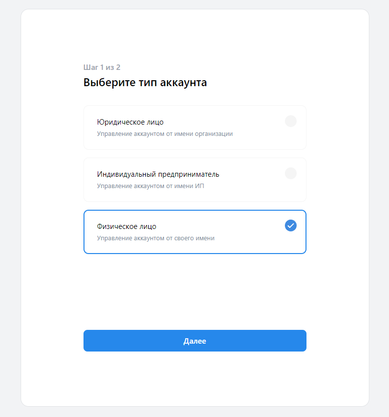
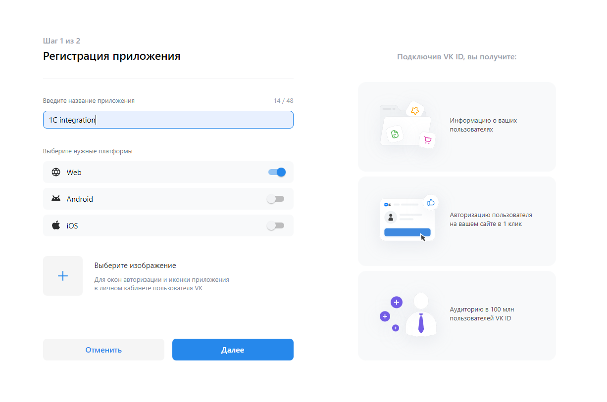
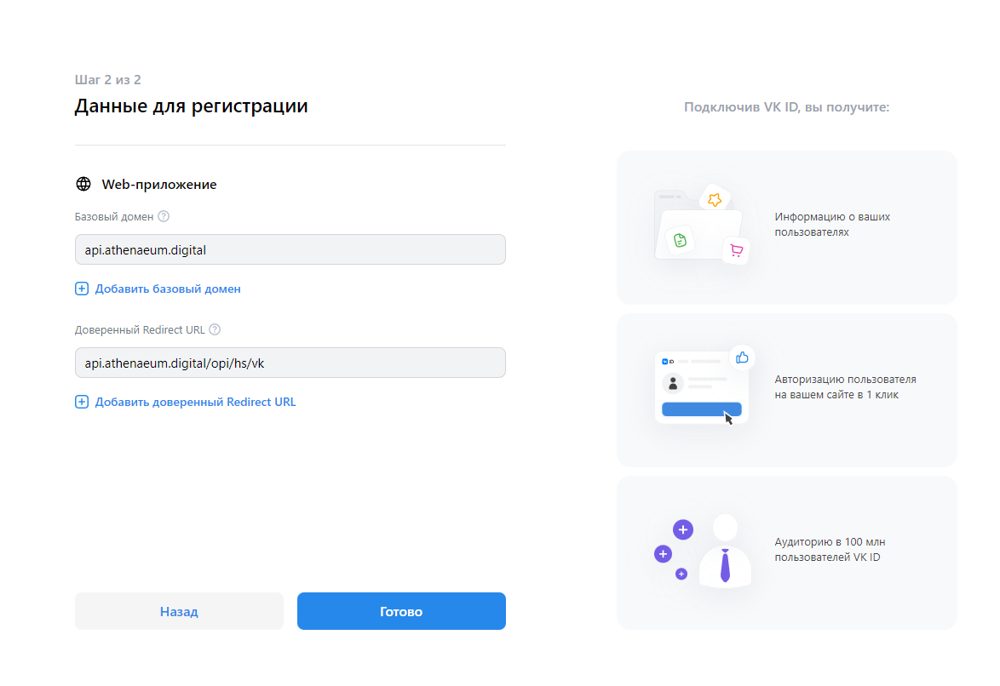
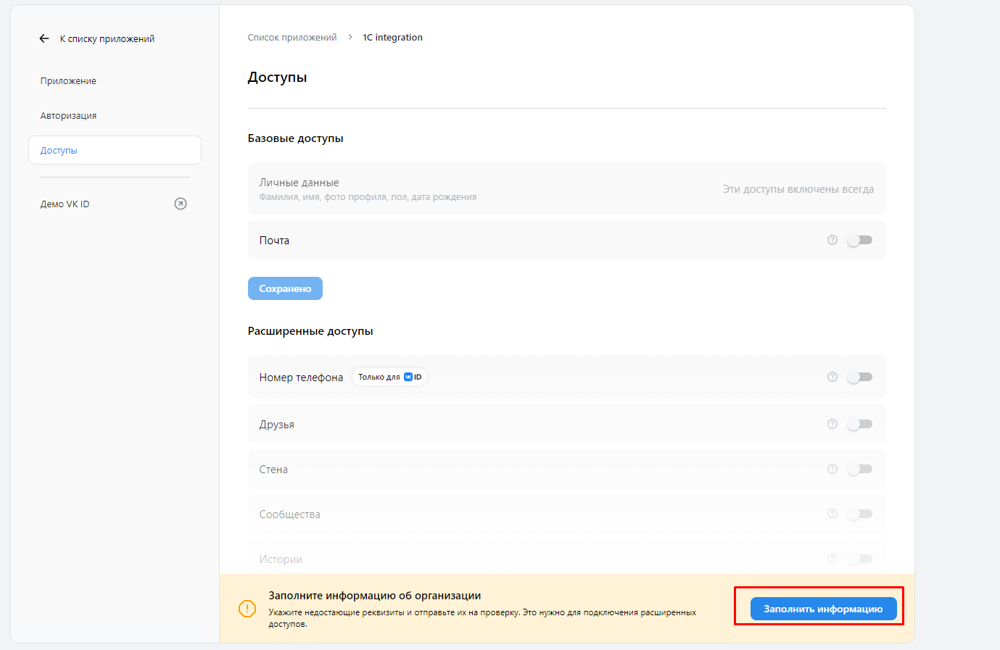
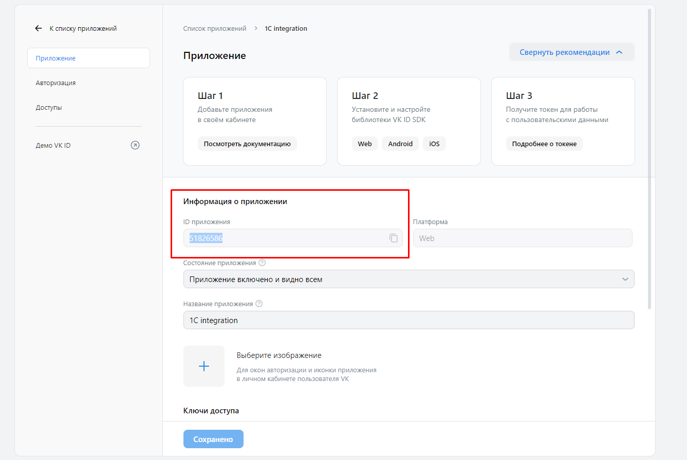
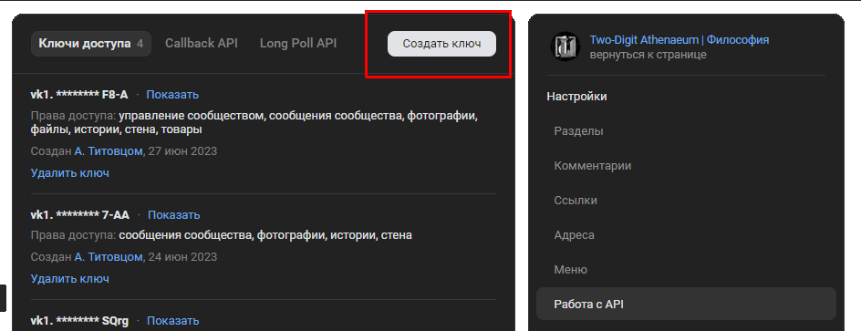

![]()
ВКонтакте
Этот раздел посвящен библиотеке для работы с VK API в 1С:Предприятие, OneScript и CLI. Она заточена для работы с сообществами и выполнением действий от их имени. На данной странице описаны все действия, необходимые для полноценного начала работы
Начало работы
Для начала работы необходимо получить некоторые параметры для VK API.
Перечень необходимых данных в виде структуры содержится в функции ПолучитьСтандартныеПараметры(). Вы можете указывать значения параметров прямо в ней или же передавать их структурой при вызове любых других методов библиотеки в качестве необязательного параметра Параметры (последний во всех методах билиотеки). В последнем случае стандартные параметры будут перезаписаны по ключам теми, которые переданы при вызове метода. Перезаписаны будут только совпадающие по ключам данные. Если какой то параметр есть в наборе стандартных, но не был передан при вызове метода, то он сохранит стандартное значение.
_Параметры = Новый Структура;
_Параметры.Вставить("v" , "5.131");
_Параметры.Вставить("from_group" , "1");
_Параметры.Вставить("group_id" , "123456789");
_Параметры.Вставить("owner_id" , "-123456789");
_Параметры.Вставить("app_id" , "87654321");
_Параметры.Вставить("access_token" , "vk1.a.E-byuFeG1qcN7...");
Рассмотрим получение каждого значения:
1. v
Параметр v означает версию VK API. Тестирование проводилось на 5.131, рекомендуется его таким и оставить
2. from_group
От лица группы. Должен быть 1
3. group_id и owner_id
ID группы. Если у вас стандартный адрес группы, то id можно найти в URL. В противном случае он будет на вкладке "Управление" в группе, под полем Адрес. owner_id - тоже самое, но со знаком '-' впереди

4. app_id
app_id - ID приложения. Для создания приложения необходимо:
-
Перейти по адресу https://id.vk.com/about/business/go, авторизоваться и ввести свои данные физ. или юр. лица

-
Ввести название приложения и выбрать пункт Web

-
Ввести домееное имя и URL обработчика перенаправлений. Тут нужно отметить, что данный механизм создания приложений - новый. Еще недавно приложения VK создавались иначе и иметь redirect_url для них было не нужно. Н а данный момент не совсем понятно, зачем он нужен нам для серверного приложения - просто такого понятия как серверное приложение у VK теперь нет. Теоретически, туда можно вписать что угодно - для работы с библиотекой в получении обратных данных нет необходимости. Однако, с течением времени, это может измениться.

-
Ввести паспортные данные или данные об организации, включить доступ к сообществам (короче, если у вас уже было приложение до этого, то вам крупно повезло, а если нет российского паспорта - придется писать в поддержку)

-
Получить app_id на странице приложения

5. access_token
Ссылку на получение acess_token можно получить при помощи функции СоздатьСсылкуПолученияТокена или склеить вручную:
https://oauth.vk.com/authorize?client_id= + app_id + &scope=offline,wall,groups,photos,stats,stories,ads&v=5.131&response_type=token&redirect_uri=https://api.vk.com/blank.html
- По этой ссылке необходимо перейти в браузере
- Авторизоваться через ВК и подтвердить доступ
- Забрать токен из параметра URL в адресной строке
![BF]()
(Дополнительно) communitytoken
Некоторые методы, например для работы с чат-ботом сообщества, принимают в качестве параметра communitytoken - в этих методах он заменяет access_token. Для его получения необходимо:
- Зайти в раздел "Управление" в группе ВК
- Найти вкладку "Работа с API"
- Нажать "Создать ключ" и забрать его

Пока вам не нужно использовать такие методы, получать communitytoken не обязательно